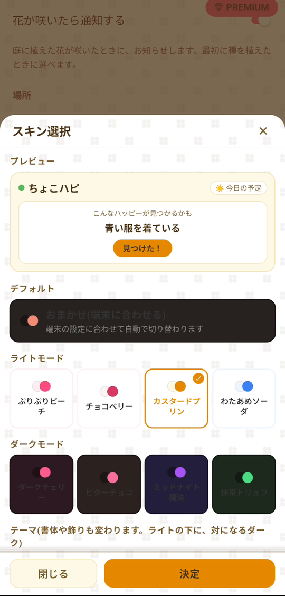
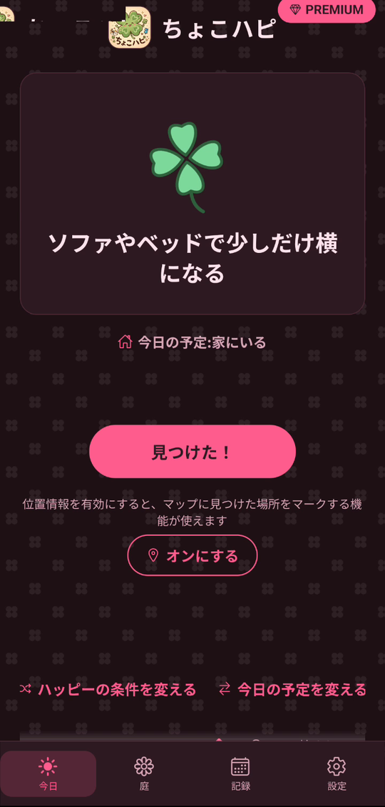
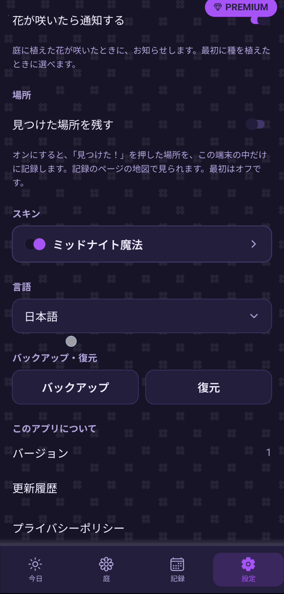

📖 はじめに（この画面でできること）
「設定」タブでは、アプリの動きや見た目を自分好みに変えられます。バックアップ・復元もここから行います（Androidのみ）。
🛠️ 詳しい操作手順
STEP 1
1日の始まりの時刻
「今日」が切り替わる時刻を、0時〜11時から選べます（初期値は0時）。「今日」タブの「1日の始まり ◯時」ボタンからも変更できます。
- この時刻より前の記録は、前の日として数えられます（例: 朝5時に設定すると、午前3時の記録は前日分になります）。
- 変更すると、既存の記録の日付も新しい区切りで数え直されます。
- この時刻になると、今日の予定と条件が選び直しになります。
STEP 2
通知の設定
- 更新時間に通知する: 「1日の始まり」の時刻に、毎日1回「新しい1日のはじまり」とお知らせします。最初はオンです（初めての「見つけた！」のときに通知の許可を求めます）。
- 花が咲いたら通知する: 植えた花が咲く日の朝9時に「花が咲きました」とお知らせします。初めて種を植えたときに自動でオンになります。オンにするには通知の許可が必要です。
STEP 3
スキン（テーマ）の変更
設定タブの「スキン」から、アプリ全体の色合い・書体・飾りが変わるテーマを選べます。プレビューを見ながら選んで「決定」で適用します。全19種と、「おまかせ（端末に合わせる）」があります。
- ライト系: ぷりぷりピーチ／チョコベリー／カスタードプリン／わたあめソーダ／ダークチェリー／ビターチョコ／ミッドナイト魔法／抹茶トリュフ
- テーマ系（ライト／ダークの対）: いちごミルク／ゆめかわパステル／くすみ喫茶レトロ／ボタニカル森ガール／シール帳ポップ
- おまかせ: 端末のライト／ダーク設定に合わせて自動で切り替わります。

スキン選択。プレビューを見ながら選べます

ダーク系スキン（ミッドナイト魔法）を適用した画面
STEP 4
言語の変更
設定タブの「言語」から、表示言語を12言語から選べます（日本語／English／简体中文／繁體中文／한국어／Español／Português／Français／Deutsch／Русский／Bahasa Indonesia／Italiano）。初期値は端末の言語です（対応していない言語の場合は英語になります）。
STEP 6
ホーム画面ウィジェット（Androidのみ）
ホーム画面のウィジェット一覧から追加できます。
- ちょこハピ（無料）: 今日の予定とハッピー条件、今日の個数が表示されます。「見つけた！」ボタンを押すとアプリが開いてそのまま1件記録できます。「予定を選ぶ」ボタンで「今日」タブへ移動します。
- ちょこハピ 庭（PREMIUM限定）: 庭に植えた花の様子と「庭 Lv.◯」「咲いた花 ◯ / 植えた花 ◯」が表示されます。
- ちょこハピ 週間（PREMIUM限定）: 直近7日間に見つけた回数が日ごとに表示されます。
STEP 7
バックアップと復元（Androidのみ）
バックアップ: 設定タブの「バックアップ・復元」→「バックアップ」を選び、保存先のフォルダを指定すると、バックアップファイル（.tar）が1つ作られます。作成時にパスワードを決めます（確認入力つき）。記録・庭・設定などのデータがまるごと入ります。
復元: 「復元」からバックアップファイル（.tar）を選び、作成時のパスワードを入力します。現在のデータはすべて置き換えられます（実行前に確認が出ます）。完了後はアプリの再起動が必要です。
- パスワードを忘れると復元できません。 分かる場所に控えておいてください。
- パスワードが違う・ファイルが壊れている等の場合は、理由が表示されて復元できません。
- 購入状態（PREMIUM）はバックアップに含まれません。復元先の端末の購入状態が使われます。

設定タブ。「バックアップ・復元」もここから
💡 このアプリについて
設定タブの「このアプリについて」から、バージョンの確認、更新履歴（公式サイトのリリースノート）、プライバシーポリシー、「アプリを評価する」（Google Playのアプリページ）が開けます。